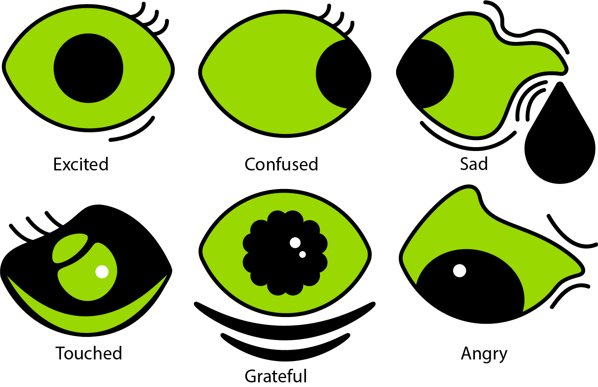

I personally like Green, so I created a variety of eye expression of a devil eye (because gree eyes could represent to something like monster or devil.) Devil also have emotional, it could be sad, happy, confused and excited. I had use pen tools and curvature tools to work on each eyes design. Also add some dots of white to create white inner pupils which made each eye look realistic close to real human eye. I really enjoyed this assignment so much.